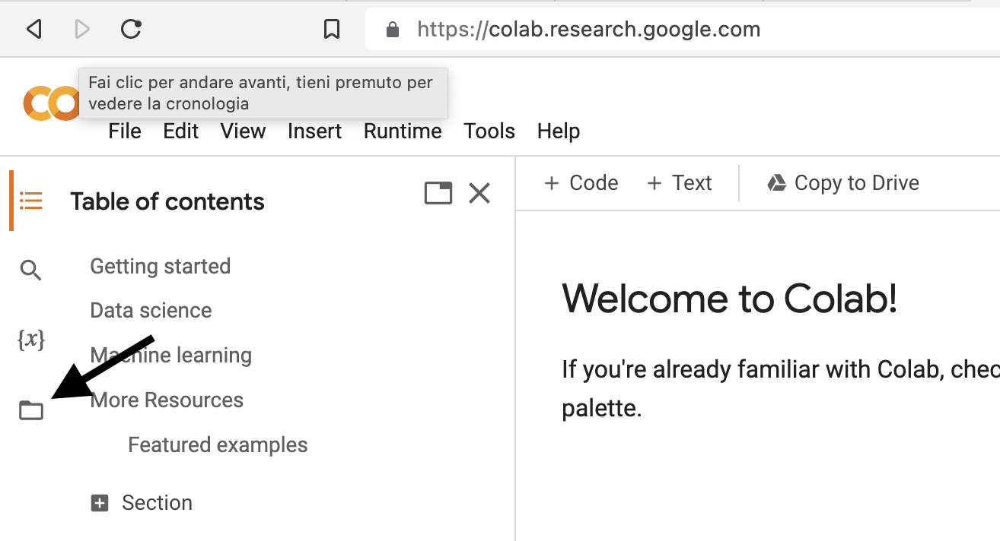
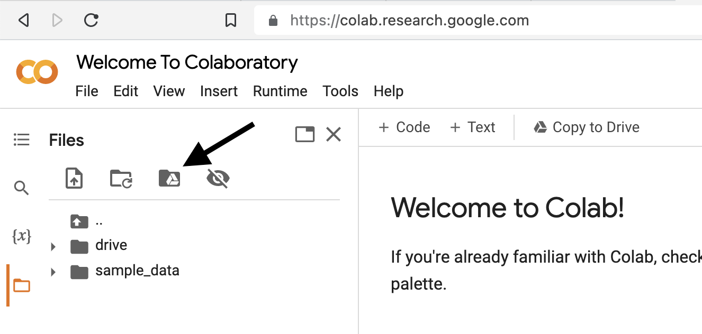
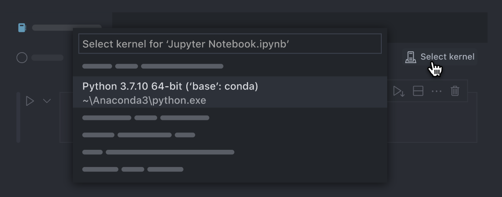

Ambiente di lavoro
Contents
2. Ambiente di lavoro#
Tutte le attività previste da questo insegnamento possono essere svolte su Google Colab senza installare nulla sul vostro computer. Questo è l’approccio che consiglio.
2.1. Colab#
Collegandosi al seguente link è possibile, dopo aver selezionato l’opzione “New notebook”, scrivere del codice python direttamente dal browser senza installare nulla sul proprio computer. Al seguente link è disponibile una guida che spiega le principali opzioni di un notebook. Ciascun notebook può essere salvato sulla propria cartella Drive di Google.
2.1.1. Jupyter Notebook#
Jupyter Notebook è un’applicazione web open-source che consente di creare e condividere documenti interattivi contenenti codice, testo descrittivo, grafici e altri elementi multimediali. I Jupyter Notebook consentono di documentare e condividere il processo di analisi dei dati in modo trasparente e riproducibile. In un Jupyter Notebook, il codice viene eseguito in celle, che possono essere eseguite in modo interattivo, in qualsiasi ordine. Questo permette di esplorare i dati e di fare analisi dei dati in modo iterativo, aiutando gli utenti a capire e ad affinare le proprie analisi.
Nel notebook è possibile inserire due tipi di celle:
celle di testo, che consentono di scrivere testo formattato utilizzando la sintassi Markdown, permettendo agli autori di scrivere del testo descrittivo, includere immagini, formule in formato \(\LaTeX\), creare tabelle e altro ancora;
celle di codice, che consentono di scrivere e eseguire codice Python. Il codice può essere eseguito cliccando sul triangolo presente a sinistra di ogni cella. In diverse celle possono essere aggiunte istruzioni diverse e le celle possono essere eseguite sequenzialmente. Una funzione definita in una cella precedente può essere utilizzata successivamente solo se la cella precedente è stata eseguita.
I Jupyter Notebook possono essere eseguiti localmente, sul proprio computer, o su un server remoto (come Colab).
Risultano già installate su Colab numerose librerie Python in ogni runtime. Capita di avere bisogno di installare librerie aggiuntive su Colab. Le librerie possono essere scaricate usando i comandi bash con !. Questo dice a Colab che questa cella del notebook non è un codice Python ma uno script della riga di comando. Per esempio, possiamo installare le librerie pymc, bambi e arviz nel modo seguente.
!pip install bambi
!pip install pymc
!pip install arviz
2.1.2. Google Drive#
Vi consiglio di creare, sul vostro Drive di Google, una cartella in cui salverete i Notebook di questo insegnamento. Per accedere al vostro Drive, potete prima andare sul vostro account mail unifi. In alto a destra ci sarà un’icona con una griglia di 9 puntini (App Google). Selezionando questa icona potete poi andare sul vostro Drive. Una volta su Drive, potete creare una nuova cartella (per esempio psicometria) in cui salvare i Notebook che avrete creato.
Quando siete in Colab, per accedere alla vostra cartella Drive, procedete nel modo seguente. Dalla pagina iniziale, selezionate dal menu in alto a sinistra l’icona che rappresenta una cartella (Files).

Questo aprirà il seguente menu.

Selezioniamo la terza icona tra le quattro disposte orizzontalmente. Apparirà l’istruzione “Run this cell to mount your Google Drive”. Clicchiamo sull’icona con il triangolo contenuto in un cerchio grigio. A questo punto, cliccando sull’icona drive e poi su MyDrive possiamo accedere alle cartelle e ai file che abbiamo salvato sul nostro Google Drive.
L’istruzione precedente installerà varie librerie, tra cui le seguenti: numpy, pandas, matplotlib, seaborn, scipy, statmodels, pymc e bambi. Le librerie che ho appena elencato sono sufficienti per gli scopi di questo insegnamento.
Per ottenere quali librerie sono disponibili su Colab è possibile usare l’istruzione !pip freeze.
Si noti che la versione gratuita del runtime di Google Colaboratory non è persistente, ovvero tutto l’ambiente di lavoro verrà cancellato una volta terminata la sessione di lavoro. Ciò significa che è necessario reinstallare le librerie ogni volta che ci connettiamo di nuovo a Colab. I Jupyter Notebook possono invece essere salvati sulla propria cartella Google Drive.
2.2. Installazione sul proprio computer#
Tutto il codice che verrà presentato in questo insegnamento può essere eseguito sui Notebook online gratuiti forniti da Google (Google Colab). Se si desidera, è possibile seguire le seguenti istruzioni per installare Python e le librerie necessarie sul proprio computer. Tuttavia, è importante sottolineare che queste istruzioni sono rivolte solo a coloro che si sentono particolarmente avventurosi e che hanno una certa esperienza con l’installazione del software. Ho testato questa procedura su alcuni computer con sistema operativo macOS e su computer Windows, tutti aggiornati all’ultima versione del sistema operativo. L’installazione su Linux dovrebbe essere identica a quella su macOS.
Per poter programmare sul proprio computer sono necessarie due cose:
l’installazione di un interprete, ad esempio Python 3.9, che consentirà di eseguire il codice scritto in linguaggio Python;
uno strumento per scrivere e eseguire il codice utilizzando un ambiente di sviluppo integrato (IDE), come ad esempio Visual Studio Code. L’IDE fornisce un’interfaccia utente per scrivere, eseguire e debuggare il codice, oltre ad altre funzionalità come il controllo della versione, l’auto-completamento del codice e la gestione dei progetti.
2.3. Installlare Python in un ambiente virtuale#
2.3.1. Anaconda#
Il modo più semplice per installare Python è quello di usare Anaconda. Per prima cosa, dunque, è necessario procedere con l’installazione di Anaconda sul vostro computer.
Warning
Si noti che l’installazione di Anaconda per gli utenti Windows è leggermente diversa da quella per utenti MacOs. Per il Mac, basta scaricare ed eseguire l’installer che si scarica dal sito di Anaconda. È sufficiente usare le opzioni di default.
Per gli utenti Windows, le istruzioni sono le seguenti.
Scaricare il pacchetto “64-Bit Graphical Installer” dal sito di Anaconda.
Eseguire il programma di installazione appena scaricato.
Impostare l’installazione di Anaconda solamente per l’utente corrente (Just Me) e lasciare il percorso di installazione invariato.
IMPORTANTE: nelle opzioni avanzate scegliere di registrare Anaconda come l’installazione di Python di sistema e selezionare l’opzione relativa all’aggiunta di Anaconda al PATH.
Verificare l’installazione di Anaconda. Eseguire “Anaconda Navigator” cercandolo nella barra di ricerca di Windows oppure dal menu Start -> Anaconda3 (64-bit) -> Anaconda Navigator. Il primo avvio potrebbe richiede diversi secondi. Se l’applicazione si avvia correttamente allora l’installazione di Anaconda è andata a buon fine.
Inoltre, dal menu Start, cercare e aprire “Anaconda Prompt”. Per verificare che conda sia installato, nel terminale digitare conda --version.
2.3.2. L’ambiente virtuale#
Dopo aver completato l’installazione di Python, è necessario impostare un ambiente virtuale, chiamato “virtual environment”, all’interno del quale è possibile installare l’interprete e le librerie necessarie. Il virtual environment è un “contenitore” separato dal resto del sistema operativo, il che significa che le librerie installate all’interno del virtual environment non interferiranno con altre installazioni globali del sistema.
La ragione per cui si preferisce utilizzare un virtual environment invece di un’installazione globale è legata alla rapida evoluzione del mondo Python. Spesso, infatti, ci sono differenze sostanziali anche tra le release minori dell’interprete, il che può rendere incompatibili le librerie e, di conseguenza, i programmi scritti per le diverse versioni. Avere un ambiente deterministico che specifica la versione dell’interprete e le versioni delle librerie rappresenta una “garanzia” di funzionamento dei programmi. Basterà, infatti, replicare esattamente la configurazione dell’ambiente virtuale per garantire il corretto funzionamento del programma.
Per gestire gli ambienti virtuali utilizzeremo i programmi conda e pip. Entrambi i programmi sono inclusi in Anaconda, pertanto saranno disponibili sul computer una volta che Anaconda è stato installato. In questo tutorial, utilizzeremo conda per creare, attivare e disattivare gli ambienti virtuali, mentre utilizzeremo pip per installare l’interprete Python e le librerie.
Le istruzioni seguenti devono essere eseguite tramite terminale. Per prima cosa, è necessario uscire dall’ambiente virtuale corrente:
conda deactivate
Se succede che voi siate già nell’ambiente base otterrete un messaggio di errore che vi avvertirà che non si può deattivare l’ambiente base. Non c’è problema, eseguite comunque il comando precedente.
A questo punto è possibile creare un nuovo ambiente virtuale che possiamo chiamare, ad esempio, pymc (il nome è arbitrario). Nell’istruzione seguente specifico che tale ambiente deve contentere la libreria ipython, la quale è necessaria per potere usare i nootebok Jupyter con Visual Studio Code.
conda create -n "pymc" ipython
Quando vi verrà chiesto se procedere, rispondete di sì:
Proceed ([y]/n)? y
Dobbiamo ora attivare l’ambiente virtuale che abbiamo creato:
conda activate pymc
Procediamo ora con l’installazione di bambi (“BAyesian Model-Building Interface”; io ho installato la versione dev ma è possibile, o preferibile, installare la versione ‘stabile’) – si vedano le istruzioni sulla pagina web della libreria. Installare bambi ha, come side effect, l’istallazione di quasi tutte le altre librerie che ci serviranno:
pip install git+https://github.com/bambinos/bambi.git
Aggiungo le seguenti librerie:
pip install statsmodels
pip install seaborn
pip install graphviz
pip install watermark
Questo conclude la creazione dell’ambiente virtuale pymc che useremo.
2.3.2.1. Altri comandi utili#
Un ambiente virtuale è contenuto in una singola cartella. Possiamo ottenere l’indirizzo di questa cartella con:
conda info -e
Ciò rende molto facile rimuovere completamente un ambiente virtuale. Per fare questo, supponendo che l’ambiente virtuale si chiami my_env, usiamo:
conda env remove -n my_env
Se vogliamo solo rimuovere una libreria dall’ambiente virtuale (supponiamo si chiami package_name), usiamo:
conda remove package_name
2.4. Installazione di un ambiente di sviluppo integrato (IDE)#
Dopo avere installato Python e le librerie necessarie, la seconda cosa che dobbiamo fare è installare un ambiente di sviluppo integrato (IDE). Un ambiente di sviluppo integrato è un’applicazione software che fornisce vari strumenti per semplificare la programmazione.
Ci sono molti IDE diversi. Vi suggerisco di usare Visual Studio Code, un IDE gratuito e open source di Microsoft disponibile per tutti i principali sistemi operativi. Proprio come Python, anche Visual Studio può essere esteso con pacchetti, e sono questi pacchetti, chiamati estensioni, che lo rendono così utile. Visual Studio Code può essere scaricato dalla seguente pagina web.
Visual Studio Code supporta la programmazione sia mediante script che mediante notebook Jupyter. Mentre gli script contengono principalmente codice (e hanno l’estensione file .py), i notebook possono contenere testo e codice in diversi blocchi chiamati “celle”. I notebook Jupyter hanno l’estensione file .ipynb.
Dopo aver installato e aperto Visual Studio Code, andate alla scheda “estensioni” sulla barra verticale delle icone sul lato sinistro (è l’icona che assomiglia a 4 quadrati). Da lì potete installare l’estensione Python per Visual Studio Code, che potete cercare utilizzando la casella di testo all’interno del pannello delle estensioni di Visual Studio Code.
2.4.1. Lavorare con VSCode#
A questo punto siete pronti per iniziare a lavorare in VSCode. Quando aprite un file .ipynb ricordatevi sempre di selezionare l’ambiente virtuale che volete usare. Da Command Palette (⇧⌘P) usate l’istruzione Python: Select Interpreter. Oppure, più semplicemente, cliccate sull’icona Select kernel di VSCode (in alto a destra, sotto ⚙️):
